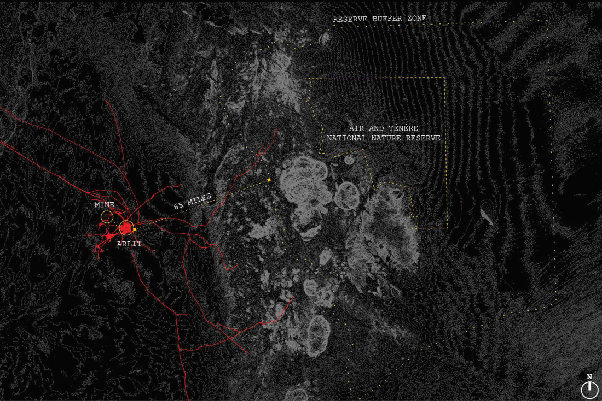
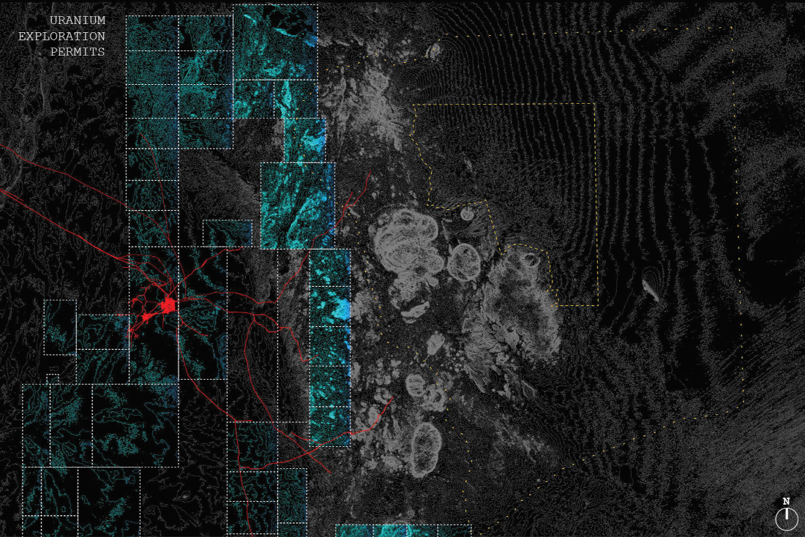
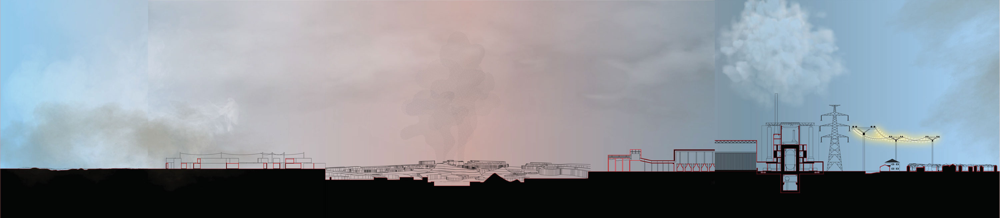
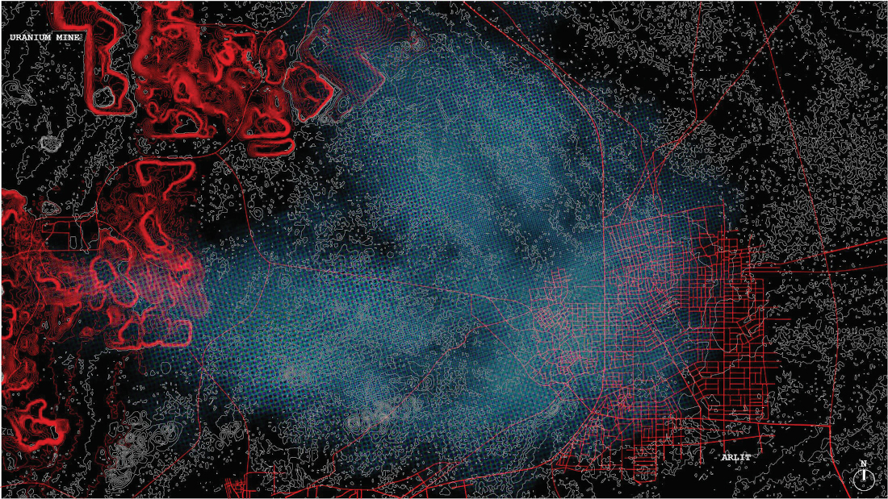
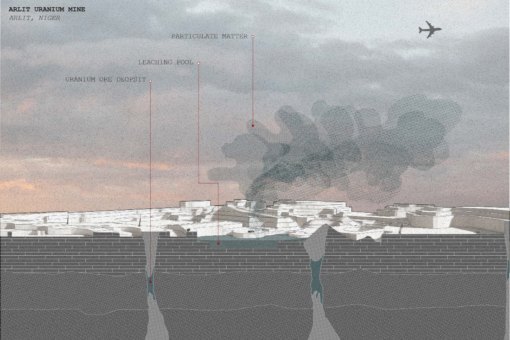

this is a brief investigation of energy in Arlit, Niger

Arlit is a small town in northern Niger, positioned between the Sahara desert and the Aïr and Ténéré National Nature Reserve (a UNESCO world heritage site).


it was founded in 1969 following the discovery of uranium deposits in the area. in 1979 two open-pit uranium mines opened. at their peak in the 1980s, the mines constituted 40% of Niger's uranium production, and uranium itself made up 90% of Niger's total exports. all of the uranium produced in Niger was sent abroad, much of it to France, to power electrical grids in cities like Paris. like many west African nations, is a former French colony which gained independence in 1960.

while the uranium itself is put to good use elsewhere, Arlit must manage under the pollution dredged up by destructive mining practices. much of the town's population depends (or depended) on mine work for their livelihood, often laboring without clear informed consent of the risks of working admist radioactivity.

in spring of 2026 Niger revoked France's 58 year concession, terminating its rights to uranium deposits in Arlit after its failure to pay surface royalties on the mining perimeter. broadly speaking, Niger is in the process of severing political ties with its colonizer, expelling French troops and ending defence agreements.
it is unclear if there have been nuclear remediation efforts in Arlit.
this was originally part of my bachelor's thesis in spring 2020